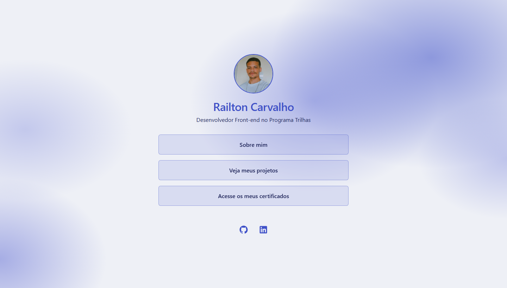
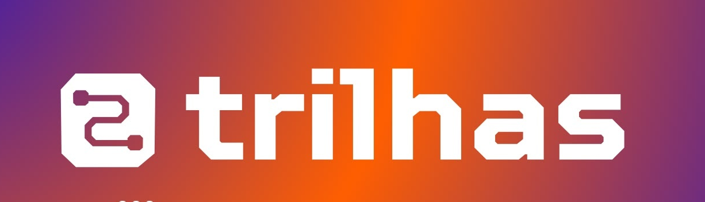

Portfólio pessoal
Página de apresentação desenvolvida com HTML, CSS e JavaScript, com navegação entre seções, layout responsivo e efeito de vidro sobre fundo em degradê.
Acessar projetoDesenvolvedor Front-end no Programa Trilhas

Página de apresentação desenvolvida com HTML, CSS e JavaScript, com navegação entre seções, layout responsivo e efeito de vidro sobre fundo em degradê.
Acessar projetoOlá, sou o Railton! Estou aprendendo desenvolvimento front-end no Programa Trilhas e gosto muito de ver uma ideia sair do papel e virar algo que as pessoas podem usar de verdade. Curto cuidar dos detalhes, das cores, do espaçamento e de como cada coisa funciona, para que navegar seja simples e agradável para os usuarios. Este portfólio é o meu primeiro projeto, e é só o começo.

Formação em desenvolvimento front-end pelo Programa Trilhas. O certificado fica disponível aqui assim que eu concluir o curso.